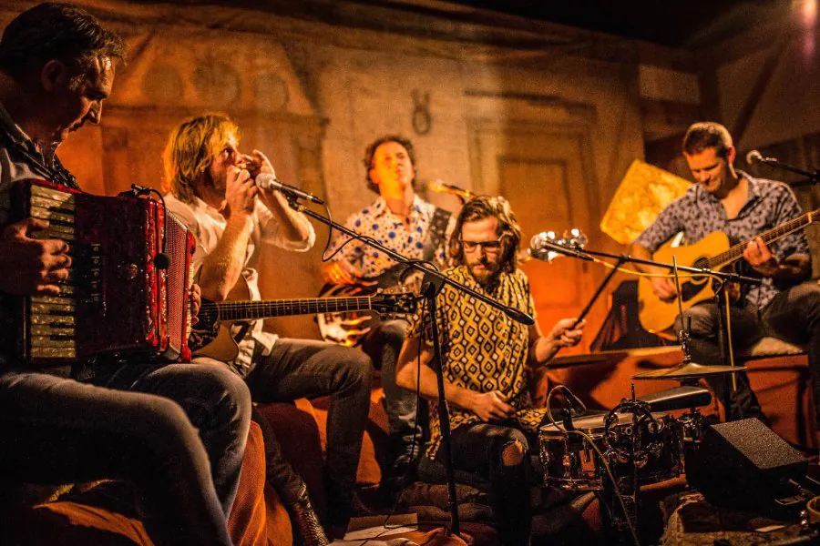

Zondag 10 januari, 14:00 tot 19:00 uur
Nieuwjaarsborrel met De Bankdirecteuren
De Bankdirecteuren zijn naar eigen zeggen “een nederig orkestje uit het Achterhoekse Vorden”. Het vijftal speelt akoestische muziek van muzikanten zoals The Beatles, Rolling Stones en Johnny Cash.
- Entree € 12,50, kaartverkoop bij De Duif (max. 6 p.p.)
- Bankmaaltijd voor thuis € 10,- p.p.: boerenkool, speklap en worst (verkoop na afloop)